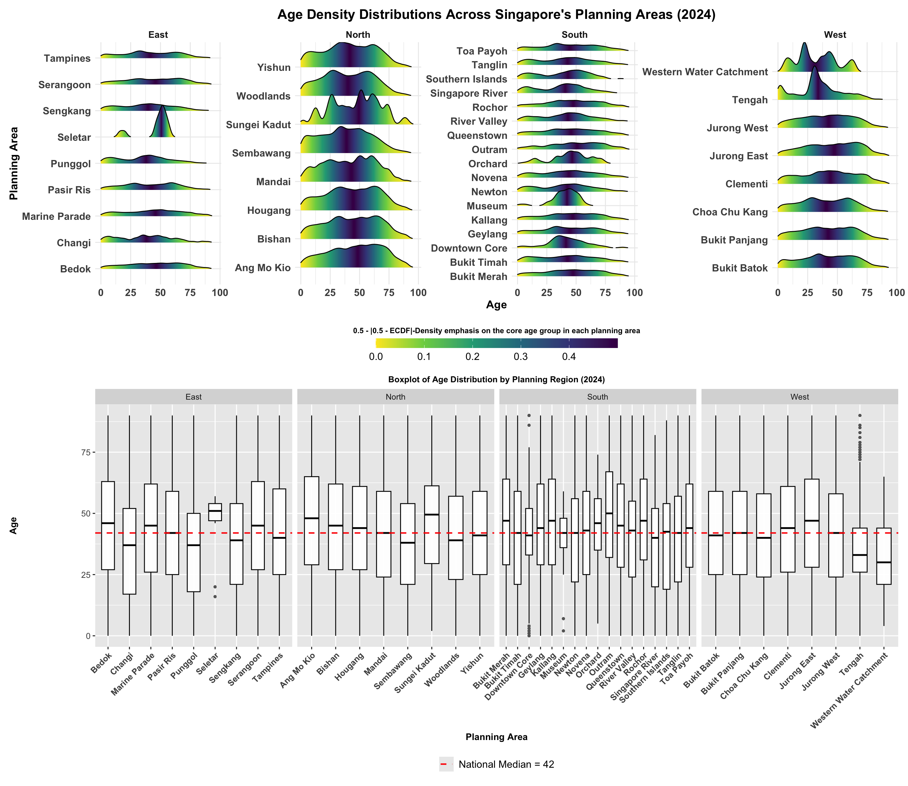

pacman::p_load(tidyverse,ggplot2,dplyr,qcc,patchwork,treemapify,ggridges,ggdist,forcats,viridis,scales)Take Home Exercise 1
The Scene
A local online media company that publishes daily content on digital platforms is planning to release an article on demographic structures and distribution of Singapore in 2024.
Objectives
Assuming the role of the graphical editor of the media company, we are tasked to prepare at most three data visualisation for the article.
Data Acquisition
Singapore Residents by Planning Area / Subzone, Single Year of Age and Sex, June 2024 A csv file from Department of Statistics, Singapore (DOS)
Getting start
Installing and Loading R packages
In this project,we are going to use the packages as below:
tidyverse – A collection of R packages for data science, including tools for data wrangling and visualization.
ggplot2 – A grammar-based system for creating elegant and complex graphics in R.
dplyr – A package for fast, intuitive data manipulation using verbs like
filter,mutate, andsummarise.qcc – Tools for statistical quality control charts such as control charts and capability analysis.
patchwork – Helps combine multiple
ggplot2plots into one graphic layout easily.treemapify – Allows creation of treemaps using
ggplot2syntax to visualize part-to-whole relationships.ggridges – Enables ridge plots (joyplots) to show distributions across categories.
ggdist – Extends
ggplot2to visualize distributions, uncertainty, and intervals.forcats – Simplifies working with categorical (factor) variables in R.
viridis – Provides colorblind-friendly and perceptually uniform color palettes for plots.
scales – Formats plot axis labels, legends, and color scales (e.g., commas, percentages).
Data Wrangling
1.Importing Data
S_data <- read_csv("data/respopagesex2024.csv",show_col_types = FALSE)2.Data information
purrr::map_chr(S_data, typeof) PA SZ Age Sex Pop Time
"character" "character" "character" "character" "double" "double" | Column Headers | Headers Info | Data Type |
|---|---|---|
| PA | Planning Area | Character |
| SZ | Subzone | Character |
| Age | Single Year of Age | Character |
| Sex | Sex | Character |
| Pop | Resident Count | Double |
| Time | Time/Period | Double |
3.Checking for Missing Values
S_data %>%
summarise(across(everything(), ~ sum(is.na(.))))# A tibble: 1 × 6
PA SZ Age Sex Pop Time
<int> <int> <int> <int> <int> <int>
1 0 0 0 0 0 0As shown from the result,the dataset S_data is clean in terms of missing data — there are no NA values in any of the columns.
4.Checking for Duplicates
The first one returns the number of duplicated rows, while the second one helps you view the actual duplicated rows in the dataset.
# Check if there are exact duplicate rows
S_data %>%
duplicated() %>%
sum()[1] 0# View specific rows that are repeated
S_data %>%
filter(duplicated(.))# A tibble: 0 × 6
# ℹ 6 variables: PA <chr>, SZ <chr>, Age <chr>, Sex <chr>, Pop <dbl>,
# Time <dbl>The dataset S_data contains no exact duplicate rows. All records are unique.
5.Binning Numerical Variables
- Age: The age variable is divided into 19 categories, spanning from 0 to 90+ years old , with 4-year intervals (e.g., 0-4, 5-9, 10-14, etc.).
unique(S_data$Age) [1] "0" "1" "2" "3" "4"
[6] "5" "6" "7" "8" "9"
[11] "10" "11" "12" "13" "14"
[16] "15" "16" "17" "18" "19"
[21] "20" "21" "22" "23" "24"
[26] "25" "26" "27" "28" "29"
[31] "30" "31" "32" "33" "34"
[36] "35" "36" "37" "38" "39"
[41] "40" "41" "42" "43" "44"
[46] "45" "46" "47" "48" "49"
[51] "50" "51" "52" "53" "54"
[56] "55" "56" "57" "58" "59"
[61] "60" "61" "62" "63" "64"
[66] "65" "66" "67" "68" "69"
[71] "70" "71" "72" "73" "74"
[76] "75" "76" "77" "78" "79"
[81] "80" "81" "82" "83" "84"
[86] "85" "86" "87" "88" "89"
[91] "90_and_Over"As seen in the value “90_and_Over”,We need to change it into Numeric for better bin and Create Age_group 19 bins
Code-Binning Numerical Variables
S_data <- S_data %>%
mutate(
Age = as.character(Age),
Age_num = suppressWarnings(as.numeric(Age)),
Age_Group = case_when(
Age == "90_and_Over" ~ "90_and_Over",
Age_num >= 0 & Age_num <= 4 ~ "0-4",
Age_num >= 5 & Age_num <= 9 ~ "5-9",
Age_num >= 10 & Age_num <= 14 ~ "10-14",
Age_num >= 15 & Age_num <= 19 ~ "15-19",
Age_num >= 20 & Age_num <= 24 ~ "20-24",
Age_num >= 25 & Age_num <= 29 ~ "25-29",
Age_num >= 30 & Age_num <= 34 ~ "30-34",
Age_num >= 35 & Age_num <= 39 ~ "35-39",
Age_num >= 40 & Age_num <= 44 ~ "40-44",
Age_num >= 45 & Age_num <= 49 ~ "45-49",
Age_num >= 50 & Age_num <= 54 ~ "50-54",
Age_num >= 55 & Age_num <= 59 ~ "55-59",
Age_num >= 60 & Age_num <= 64 ~ "60-64",
Age_num >= 65 & Age_num <= 69 ~ "65-69",
Age_num >= 70 & Age_num <= 74 ~ "70-74",
Age_num >= 75 & Age_num <= 79 ~ "75-79",
Age_num >= 80 & Age_num <= 84 ~ "80-84",
Age_num >= 85 & Age_num <= 89 ~ "85-89",
TRUE ~ NA_character_
)
)6.Data preparation
6.1Data preparation for Region :
Mapping Planning Area (PA) to Region: A reference table is manually constructed to assign each Planning Area to one of Singapore’s five broad Regions (e.g., North, East). This enables aggregation and comparison at the regional level.
Expanding Data and Merging Region Info:
The dataset is expanded usinguncount()to generate one row per individual based on the population count (Pop). Then,left_join()integrates the region information into the dataset. This transformation facilitates detailed demographic breakdowns by Region, Age, and Gender in subsequent analysis and plots.
Code-Data preparation for Region
region_map <- tibble::tibble(
PA = c(
"Ang Mo Kio", "Bedok", "Bishan", "Bukit Batok", "Bukit Merah",
"Bukit Panjang", "Bukit Timah", "Central Water Catchment", "Changi",
"Choa Chu Kang", "Clementi", "Downtown Core", "Geylang", "Hougang",
"Jurong East", "Jurong West", "Kallang", "Mandai", "Marine Parade",
"Novena", "Orchard", "Outram", "Pasir Ris", "Punggol", "Queenstown",
"River Valley", "Rochor", "Sembawang", "Sengkang", "Serangoon",
"Simpang", "Tampines", "Tanglin", "Tengah", "Toa Payoh", "Tuas",
"Western Islands", "Western Water Catchment", "Woodlands", "Yishun",
"Seletar", "Southern Islands", "Singapore River", "Museum", "Newton",
"Straits View", "Sungei Kadut", "North-Eastern Islands", "Marina East",
"Marina South"
),
Region = c(
"North", "East", "North", "West", "South",
"West", "South", "South", "East",
"West", "West", "South", "South", "North",
"West", "West", "South", "North", "East",
"South", "South", "South", "East", "East", "South",
"South", "South", "North", "East", "East",
"North", "East", "South", "West", "South", "West",
"West", "West", "North", "North",
"East", "South", "South", "South", "South",
"South", "North", "East", "East", "East"
)
)
# Step 2: Merge Region into S_data
df_long_region <- S_data %>%
uncount(weights = Pop) %>%
left_join(region_map, by = "PA")6.2 Data preparation for Age :
Group by Age Group and Sex: Aggregates population counts (
Pop) to get total individuals for each combination of age group and gender.Calculate Gender-wise Percentage: Within each gender group, computes what proportion each age group represents as a percentage.
Create Plot-ready Columns:
Pop_plot: Multiplies male values by -1 to align them to the left in a population pyramid.
Perc_plot: Same logic, but for percentage values.
Label_pop and Label_perc: Format population and percentage for cleaner label display in the plot.
Set Age Group Factor Levels:
Ensures age groups are ordered from youngest to oldest in the vertical axis of the pyramid.1.
Define Age Group Order:
Original Age_Group classification and Manually define a logical order for
Age_Groupusingfactor(levels = ...)to ensure the y-axis in the plot appears from youngest to oldest.
Code-Data preparation for Age
pyramid_data <- S_data %>%
group_by(Age_Group, Sex) %>%
summarise(Population = sum(Pop), .groups = "drop") %>%
group_by(Sex) %>%
mutate(Percentage = Population / sum(Population) * 100) %>%
mutate(
Pop_plot = ifelse(Sex == "Males", -Population, Population),
Perc_plot = ifelse(Sex == "Males", -Percentage, Percentage),
Label_pop = format(Population, big.mark = ","),
Label_perc = paste0(round(Percentage, 1), "%")
)
age_levels <- c(
"0-4", "5-9", "10-14", "15-19", "20-24", "25-29",
"30-34", "35-39", "40-44", "45-49", "50-54", "55-59",
"60-64", "65-69", "70-74", "75-79", "80-84", "85-89", "90_and_Over"
)
pyramid_data$Age_Group <- factor(pyramid_data$Age_Group, levels = age_levels)
#Keep original Age_Group classification and use factor to manually sort
age_levels <- c(
"0-4", "5-9", "10-14", "15-19", "20-24", "25-29",
"30-34", "35-39", "40-44", "45-49", "50-54", "55-59",
"60-64", "65-69", "70-74", "75-79", "80-84", "85-89", "90_and_Over"
)6.3 Data preparation for desnsity:
Standardize the Age Variable：
Convert the
Agevariable into numeric format. The"90_and_Over"label is replaced with the numeric value90to allow proper statistical calculations (e.g., mean, density).Expand the Data by Population Count：
Transform the dataset so each row represents one individual, replicating rows according to the
Popcolumn (population count). This makes it suitable for density estimation.Compute Density Peaks and Median
For each gender:
Estimate a density curve over age.
Identify the peak point (the age with the highest density) and Median point.
Store the peak age and corresponding density value for annotation.
Code-Data preparation for desnsity
# Step 1: Clean the Age data with data type transformation
S_data <- S_data %>%
mutate(Age = ifelse(Age == "90_and_Over", "90", Age),
Age_numeric = as.numeric(Age))
# Step 2: Expand to "one row per person"
S_long <- S_data %>%
uncount(weights = Pop)
# Step 3: Average age (mean)
avg_age <- S_long %>%
group_by(Sex) %>%
summarise(mean_age = mean(Age_numeric))
# Step 4: Density peak + y-coordinate adjustments for vertical separation
density_peaks <- S_long %>%
group_by(Sex) %>%
summarise(
peak_age = density(Age_numeric)$x[which.max(density(Age_numeric)$y)],
peak_density = max(density(Age_numeric)$y)
) %>%
mutate(
label_text = paste0(Sex, ": ", round(peak_age, 1)),
label_y = peak_density + ifelse(Sex == "Males", 0.0006, 0.0009)
)
# Step 5: Prepare mean_labels for bottom annotation
mean_labels <- avg_age %>%
mutate(
label_text = paste0(round(mean_age, 1)),
label_y = 0.001,
label_x = ifelse(Sex == "Males", mean_age - 8, mean_age + 5)
)
# Step 4 : Median calculation with cleaning
df_long_region <- df_long_region %>%
mutate(
Age = ifelse(Age == "90_and_Over", "90", Age),
Age = as.numeric(Age)
) %>%
filter(!is.na(Age))
median_age <- median(df_long_region$Age)
df_median <- data.frame(Median = median_age)
median_age <- median(df_long_region$Age, na.rm = TRUE)
df_median <- data.frame(Median = median_age)
df_region_gender <- df_long_region %>%
filter(!is.na(Sex), !is.na(Region)) %>%
group_by(Region, Sex) %>%
summarise(n = n(), .groups = "drop")6.4 Data preparation for Multivariate relationship between Region × Age Group × Gender:
Group Data by Region, Age Group, and Gender
Use
group_by(Region, Age_Group, Sex)andsummarise()to count the number of individuals (Pop) in each subgroup.Convert to Wide Format
Use
pivot_wider()to restructure the data so that each row contains counts of bothMalesandFemales, facilitating ratio calculation.Fill missing values with
0to avoid calculation errors.Calculate Female-to-Male Ratio
Create a new variable
SexRatio = Females / Males.
Code-Data preparation for Heatmap
df_sex_ratio <- df_long_region %>%
filter(!is.na(Sex), !is.na(Age_Group)) %>%
mutate(Age_Group = factor(Age_Group, levels = age_levels))
# Count the number of people in each Region + AgeGroup + Sex
df_grouped <- df_sex_ratio %>%
group_by(Region, Age_Group, Sex) %>%
summarise(Pop = n(), .groups = "drop")
# Convert to wide format, one line contains the number of female / male
df_wide <- df_grouped %>%
pivot_wider(names_from = Sex, values_from = Pop, values_fill = 0)
# Calculating Female-to-Male Ratios
df_wide <- df_wide %>%
mutate(SexRatio = Females / ifelse(Males == 0, NA, Males))Data Analysis
I.Exploration of Singapore Population and Age Distribution by Gender (2024)
1.1 Population pyramid using gender and age group information from S_data.And it shows the structural proportion of each group
Code-Population pyramid
P1 <- ggplot(pyramid_data, aes(x = Age_Group, y = Perc_plot, fill = Sex)) +
geom_bar(stat = "identity", width = 0.8) +
geom_text(aes(y = ifelse(Sex == "Males", Perc_plot - 0.6, Perc_plot + 0.6),
label = Label_perc),
size = 3, color = "black") +
scale_y_continuous(
limits = c(-10, 10),
breaks = seq(-10, 10, 2),
labels = function(x) paste0(abs(x), "%")
) +
coord_flip() +
labs(title = "Population Pyramid (2024)",
x = "Age Group",
y = "Population (%)") +
scale_fill_manual(values = c("Males" = "#91C4F2", "Females" = "#F4B183")) +
theme_minimal() +
theme(
axis.text = element_text(color = "black", face = "bold"),
axis.title = element_text(color = "black", face = "plain"),
plot.title.position = "plot",
)1.2 Density Plot highlights where the population is most concentrated
Code-Density Plot
# Step 6: Plot
P2 <- ggplot(S_long, aes(x = Age_numeric, fill = Sex, color = Sex)) +
geom_density(alpha = 0.4, size = 1) +
# Vertical dashed mean line
geom_vline(data = avg_age, aes(xintercept = mean_age, color = Sex),
linetype = "dashed", size = 1) +
# Mean text near bottom
geom_text(data = mean_labels,
aes(x = label_x, y = label_y, label = label_text),
size = 4, color = "black", hjust = 0.2) +
# Peak text near top, vertically spaced
geom_text(data = density_peaks,
aes(x = peak_age, y = label_y, label = label_text),
size = 4, color = "black") +
labs(
title = "Age Density by Gender (with Mean & Peak)",
x = "Age (Years)",
y = "Density"
) +
theme_minimal() +
theme(
plot.title = element_text(hjust = 0, face = "bold"),
plot.title.position = "plot",
axis.text = element_text(color = "black", face = "bold"),
legend.position = "right"
) +
scale_fill_manual(values = c("Males" = "#91C4F2", "Females" = "#F4B183")) +
scale_color_manual(values = c("Males" = "#91C4F2", "Females" = "#F4B183"))Visualisation I
layout <- "
A#
B#
"
P1 + P2 +
plot_layout(design = layout) +
plot_annotation(
title = "Singapore Population Structure and Age Distribution by Gender (2024)",
theme = theme(plot.title = element_text(hjust = 0.5, face = "bold",size = 16))
)Key Observations & Insights
The largest population share is in the 30–54 age groups for both genders.
The base of the pyramid (ages 0–19) is narrower, indicating lower birth rates in recent years.
Beyond age 65, the number of females exceeds males significantly.
The oldest age groups (especially 85+) are mostly female.
The density plot shows peaks around age 34–35 for both genders.
Mean age is slightly higher for females (34.7) than males (34.3).
The female curve extends further right, suggesting longer life expectancy.
These visualisations collectively reflect a maturing demographic structure. The dominance of the working-age population (30–54) suggests current economic stability, but the shrinking young cohort (0–19) raises concerns about future workforce replacement. The clear rise in elderly females implies a gendered ageing trend, pointing to disproportionate healthcare and eldercare demands on women. This has policy implications in terms of labour planning, social support systems, and retirement infrastructure. An ageing population with longer female longevity also highlights the need for gender-sensitive ageing policies and sustainable intergenerational support mechanisms.
II.Exploration of Age Density Distributions Across Singapore’s Planning Areas (2024)
The reason why choosing Boxplot is that it highlights variations in median age and age spread and helps identify areas with younger or older populations relative to the national median,supporting demographic insights for targeted policy and planning.
Code-Boxplot
P3 <- ggplot(df_long_region, aes(x = PA, y = Age)) +
geom_boxplot(
fill = "white",
color = "black",
outlier.color = "gray40",
outlier.size = 1,
width = 0.6,
alpha = 0.9
) +
geom_hline(
data = df_median,
aes(yintercept = Median, color = "Median"),
linetype = "dashed",
size = 0.8,
show.legend = TRUE
) +
scale_color_manual(
name = NULL,
values = c("Median" = "red"),
labels = c("Median" = paste0("National Median = ", median_age))
) +
facet_wrap(~ Region, scales = "free_x", ncol = 4, nrow = 1) +
labs(
title = "Boxplot of Age Distribution by Planning Region (2024)",
x = "Planning Area", y = "Age"
) +
theme_gray(base_size = 12) +
theme(
plot.title = element_text(face = "bold", size = 10, hjust = 0.5),
axis.title = element_text(size = 11, face = "bold"),
axis.text.x = element_text(size = 10, angle = 45, hjust = 1, face = "bold"),
axis.text.y = element_text(size = 10),
legend.position = "bottom",
legend.text = element_text(size = 12)
)The reason why choosing Ridgeline density plot with ECDF shading is that it can highlight where population age is most concentrated and emphasizes core age groups within each area.
Code-Density Distributions Plot
P4<-ggplot(df_long_region, aes(x = Age, y = PA, fill = 0.5 - abs(0.5 - stat(ecdf)))) +
stat_density_ridges(
geom = "density_ridges_gradient",
calc_ecdf = TRUE,
scale = 1.2,
rel_min_height = 0.01,
alpha = 0.95,
from = 0
) +
facet_wrap(~ Region, scales = "free", ncol = 4) +
scale_fill_viridis_c(
option = "D", direction = -1,
name = "0.5 - |0.5 - ECDF|-Density emphasis on the core age group in each planning area",
guide = guide_colorbar(
title.position = "top",
title.hjust = 0.5,
barwidth = 20,
barheight = 0.8
)
) +
labs(
title = "Age Density Distributions Across Singapore's Planning Areas (2024)",
x = "Age", y = "Planning Area"
) +
theme_minimal(base_size = 11) +
theme(
plot.title = element_text(face = "bold", size = 16, hjust = 0.5),
axis.text.y = element_text(size = 12, face = "bold"),
axis.text.x = element_text(size = 12, face = "bold"),
axis.title.y = element_text(size = 13, face = "bold"),
axis.title.x = element_text(size = 13, face = "bold"),
strip.text = element_text(face = "bold", size = 11),
legend.position = "bottom",
legend.box.margin = margin(t = 3),
legend.title = element_text(size = 9, face = "bold"),
legend.text = element_text(size = 12)
)Visualisation II

P4 / P3 Key Observations & Insights
Age distributions in Seletar and Bukit Timah are skewed toward older age groups, with density curves leaning to the right.
Newer planning areas like Tengah and Punggol show younger age profiles, with left-skewed density curves and lower median ages in the boxplots.
Most planning areas have median ages between 35 and 50, with the red dashed line (median = 42) intersecting many boxplots.
The South region has many planning areas with highly varied age distributions and numerous outliers.
The intensity of the density plot’s shading highlights age concentration levels, with some areas showing clear peaks around core age groups.
These visualisations reveal distinct demographic differences between older and newer planning areas. New towns like Punggol and Tengah attract a younger population, reflecting family-oriented migration and urban development, while mature estates such as Seletar and Orchard show a concentration of older residents—indicating housing stability and long-term settlement. The overall median age centers around 42, underscoring Singapore’s twin demographic challenges: an ageing population and declining birth rates. The spatial disparity in age structure calls for region-specific resource planning—particularly in childcare, healthcare, and transport. Notably, ageing districts may require targeted investments in elder-friendly infrastructure and services to address future demands effectively.
III.Exploration of Population Structure and Gender Distribution Across Singapore’s Planning Areas (2024)
Stacked plots ：To provide a clear overview of the total population breakdown by gender (Males vs. Females) across Singapore’s four regions (East, North, South, West)
Code-Stacked plots
df_region_gender <- df_long_region %>%
filter(!is.na(Sex), !is.na(Region)) %>%
group_by(Region, Sex) %>%
summarise(n = n(), .groups = "drop")
P5 <- ggplot(df_region_gender, aes(x = Region, y = n, fill = Sex)) +
geom_bar(stat = "identity", width = 0.5, alpha = 0.85) +
geom_text(
aes(label = comma(n)),
position = position_stack(vjust = 0.5),
size = 4,
color = "white",
fontface = "bold"
) +
labs(
title = "Total Population by Region and Gender",
x = "Region",
y = "Population"
) +
scale_y_continuous(labels = comma, expand = expansion(mult = c(0, 0.05))) +
scale_fill_manual(values = c("Males" = "#4575b4", "Females" = "#d73027")) + # 更浅颜色
theme_minimal() +
theme(
plot.title = element_text(hjust = 0, face = "plain", size = 14, margin = margin(b = 15)),
axis.title = element_text(face = "plain"),
axis.text = element_text(size = 11),
legend.title = element_blank(),
legend.position = "bottom"
)The reason why choosing Heatmap is that it can identify gender imbalances and demographic aging patterns across Singapore.The color gradient can show whether there are more women than men (red) or vice versa (blue) across age groups and regions.
Code-Heatmap
# Step 5: Draw a heat map
P6<-ggplot(df_wide, aes(x = Region, y = fct_rev(Age_Group), fill = SexRatio)) +
geom_tile(color = "white") +
scale_fill_gradient2(
low = "#4575b4", mid = "white", high = "#d73027", midpoint = 1,
name = "F/M Ratio",
guide = guide_colorbar(title.position = "bottom", title.hjust = 0.5),
limits = c(0.5, 1.5),
na.value = "grey70"
) +
labs(
title = "Gender Ratio Heatmap by Age Group and Region (F/M)",
x = "Region",
y = "Age Group",caption = "Note: <1 = More Males, >1 = More Females"
) +
theme_minimal() +
theme(
plot.title = element_text(hjust = 0, face = "plain"),
axis.title = element_text(face = "plain"),
axis.text = element_text(size = 11),
legend.title = element_text(face = "plain"),
legend.position = "bottom",
plot.caption = element_text(hjust = 0, size = 9, face = "italic", color = "black")
)Visualisation III
(P5 + P6) +
plot_annotation(
title = "Population Structure and Gender Distribution Across Regions (2024)",
theme = theme(
plot.title = element_text(size = 17, face = "bold", hjust = 0.5)
))Key Observations & Insights
East Region has the highest population for both males and females.
Female counts exceed male counts in all four regions.
South Region has the smallest total population among the four.
Age groups 30–54 show near parity in the F/M ratio across all regions.
Older age groups (75–89), especially in the West, show a higher female-to-male ratio (>1.25).
Younger age groups (0–24) tend to show balanced or male-skewed ratios (<1).
These visualisations reveal Singapore’s ageing population structure, with women outliving men especially in the older age brackets. The stacked bar chart highlights female dominance in total population counts, while the heatmap deepens the picture, showing where gender imbalances become more pronounced with age. This dual perspective underscores the need for gender-sensitive ageing policies, such as healthcare and community support tailored for older women, particularly in regions like the West where the female-to-male ratio peaks in the elderly segment.
Conclusion
These visualisations provide a comprehensive overview of Singapore’s evolving demographic landscape. They reveal a society characterised by a dominant working-age population, a steadily ageing citizen base, and notable gender disparities in longevity. While younger cohorts are shrinking—particularly in newer towns like Punggol and Tengah—the elderly population is expanding, especially among women in mature estates and western regions. The rising median age and widening spatial age gaps underscore the urgency of tailored policy interventions. These include region-specific investments in eldercare, healthcare, and childcare infrastructure, alongside broader strategies to support intergenerational cohesion and economic sustainability. Singapore’s demographic trajectory calls for integrated planning that is both age- and gender-responsive, ensuring resilience amid shifting population dynamics.